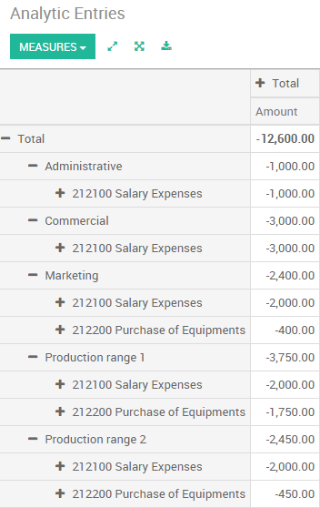

分析会计可以用于以下几种目的：
公司的成本分析
给顾客再开记工单发票
分析服务或者项目的绩效
To manage analytic accounting, you have to activate it in :
To illustrate analytic accounts clearly, you will follow three use cases, each in one of three different types of company:
工业公司：成本分析
法律公司：花费时间的再开票
IT/服务公司：绩效分析
案例1：工业公司：成本分析
In industry, you will often find analytic charts of accounts structured into departments and products the company itself is built on.
The objective is to examine the costs, sales and margins by department/resources and by product. The first level of the structure comprises the different departments, and the lower levels represent the product ranges the company makes and sells.
Analytic Chart of Accounts for an Industrial Manufacturing Company:
市场部门
商务部门
管理部门
- Production Range 1
- Production Range 2
In daily use, it is useful to mark the analytic account on each purchase invoice. When the invoice is approved, it will automatically generate the entries for both the general and the corresponding analytic accounts. For each entry on the general accounts, there is at least one analytic entry that allocates costs to the department which incurred them.
Here is a possible breakdown of some general accounting entries for the example above, allocated to various analytic accounts:
总账科目 | 分析账户 | |||||
|---|---|---|---|---|---|---|
称呼 | 科目 | 借方 | 贷方 | 科目 | 值 | |
原材料采购 | 2122 | 1500 | Production Range 1 | -1 500 | ||
分包 | 2122 | 450 | Production Range 2 | -450 | ||
有缺陷的材料的待方记录 | 2122 | 200 | Production Range 1 | 200 | ||
运输费 | 2122 | 450 | Production Range 1 | -450 | ||
员工成本 | 2121 | 10000 | 市场 | -2 000 | ||
商务 | -3 000 | |||||
管理 | -1 000 | |||||
| Production Range 1 | -2 000 | |||||
| Production Range 2 | -2 000 | |||||
采购需求单 | 2122 | 450 | 市场 | -400 |
The analytic representation by department enables you to investigate the costs allocated to each department in the company. The analytic chart of accounts shows the distribution of the company's costs using the example above:

In this example of a hierarchical structure in YuanCloud, you can analyse not only the costs of each product range, but also the costs of the whole production. A report that relates both general accounts and analytic accounts enables you to get a breakdown of costs within a given department.
The examples above are based on a breakdown of the costs of the company. Analytic allocations can be just as effective for sales. That gives you the profitability (sales - costs) of different departments.
This analytic representation by department is generally used by trading companies and industries.
A variantion of this, is not to break it down by sales and marketing departments, but to assign each cost to its corresponding product range. This will give you an analysis of the profitability of each product range.
Choosing one over the other depends on how you look at your marketing effort. Is it a global cost allocated in some general way, or is each product range responsible for its own marketing costs?
案例2：法律公司：人力资源的成本？
Law firms generally adopt management by case, where each case represents a current client file. All of the expenses and products are then attached to a given file/analytic account.
A principal preoccupation of law firms is the invoicing of hours worked, and the profitability by case and by employee.
Mechanisms used for encoding the hours worked will be covered in detail in timesheet documentation. Like most system processes, hours worked are integrated into the analytic accounting. In the employee form, specify the cost of the employee. The hourly charge is a function of the employee's cost.
So a law firm will opt for an analytic representation which reflects the management of the time that employees work on the different customer cases.
Billing for the different cases is a bit unusual. The cases do not match any entry in the general account nor do they come from purchase or sales invoices. They are represented by the various analytic operations and do not have exact counterparts in the general accounts. They are calculated on the basis of the hourly cost per employee.
At the end of the month when you pay salaries and benefits, you integrate them into the general accounts but not in the analytic accounts, because they have already been accounted for in billing each account. A report that relates data from the analytic and general accounts then lets you compare the totals, so you can readjust your estimates of hourly cost per employee depending on the time actually worked.
The following table shows an example of different analytic entries that you can find for your analytic account:
称呼 | 科目 | 总量 | 总账科目 | 借方 | 贷方 | |
|---|---|---|---|---|---|---|
学习文件(1h) | 案例1.1 | -15 | ||||
搜索信息(3h) | 案例1.1 | -45 | ||||
顾问 (4 h) | 案例 2.1 | -60 | ||||
服务费用 | 案例1.1 | 280 | 705 –给服务开票 | 280 | ||
办公用品采购 | 管理 | -42 | 601 –家具采购 | 42 | ||
燃油成本－客户方出差 | 案例1.1 | -35 | 613 – 运费 | 35 | ||
员工工资 | 6201 – 工资 | 3 000 |
Such a structure allows you to make a detailed study of the profitability of various transactions.
For more details about profitablity, please read the following document: 如何追踪使用能够记工单的人资？
But analytical accounting is not limited to a simple analysis of the profitability of different customer. The same data can be used for automatic recharging of the services to the customer at the end of the month. To invoice customers, just link the analytic account to a sale order and sell products that manage timesheet or expenses .
案例3：IT服务公司：绩效分析
大多数IT服务公司都面临者如下问题：
项目计划，
开票，项目的盈利能力和财务跟踪，
管理支持合同。
To deal with these problems, you would use an analytic chart of accounts structured by project and by sale order.
The management of services, expenditures and sales is similar to that presented above for lawyers. Invoicing and the study of profitability are also similar.
But now look at support contracts. These contracts are usually limited to a prepaid number of hours. Each service posted in the analytic accounts shows the remaining hours of support. To manage support contracts, you would create a product configured to invoice on order and link the sale order to an analytic account
In YuanCloud, each analytic line lists the number of units sold or used, as well as what you would usually find there – the amount in currency units (USD or GBP, or whatever other choice you make). So you can sum the quantities sold and used on each sale order to determine whether any hours of the support contract remain.
结论
Analytic accounting helps you to analyse costs and revenues whatever the use case. You can sell or purchase services, track time or analyse the production performance.
Analytic accounting is flexible and easy to use through all YuanCloud applications (sales, purchase, timesheet, production, invoice, …).